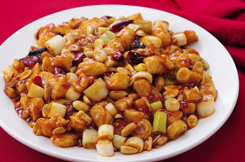

菜品介绍
宫保鸡丁是一道闻名中外的特色传统名菜，属于川菜系。该菜式的起源与鲁菜中的酱爆鸡丁、贵州菜中的胡辣子鸡丁有关，后被清朝山东巡抚、四川总督丁宝桢改良发扬，形成了一道新菜式——宫保鸡丁，并流传至今。
宫保鸡丁的特色是辣中有甜，甜中有辣，鸡肉的鲜嫩配合花生的香脆，入口鲜辣酥香，红而不辣，辣而不猛，肉质滑脆。
历史背景
宫保鸡丁由清朝山东巡抚、四川总督丁宝桢所创，他对烹饪颇有研究，喜欢吃鸡和花生米，并尤其喜好辣味。他在山东为官时曾命家厨改良鲁菜"酱爆鸡丁"为辣炒，后来在四川总督任上的时候将此菜推广开来，创制了一道将鸡丁、红辣椒、花生米下锅爆炒而成的美味佳肴。
所谓"宫保"，其实是丁宝桢的荣誉官衔。丁宝桢治蜀十年，为官刚正不阿，多有建树，于光绪十一年死在任上。清廷为了表彰他的功绩，追赠"太子太保"。太子太保是"宫保"之一，于是，为了纪念丁宝桢，他发明的这道菜由此得名"宫保鸡丁"。
制作步骤
1准备食材
鸡胸肉切丁，用料酒、淀粉、盐腌制10分钟。葱切段，姜蒜切末，干辣椒剪成小段。
2调制宫保汁
将酱油、醋、白糖、料酒、淀粉和少许水调成宫保汁备用。
3炸花生米
冷锅冷油放入花生米，小火慢炸至花生米变色，捞出沥油备用。
4炒鸡丁
热锅凉油，放入鸡丁滑炒至变色，盛出备用。
5爆香调料
锅中留底油，放入干辣椒、花椒炒香，再加入葱段、姜蒜末爆香。
6混合翻炒
放入鸡丁翻炒均匀，倒入宫保汁快速翻炒，最后加入炸好的花生米炒匀即可。

食材清单
主料
- 鸡胸肉 300克
- 花生米 50克
辅料
- 大葱 1根
- 干辣椒 10个
- 花椒 1茶匙
- 生姜 1小块
- 大蒜 3瓣
调味料
- 酱油 2汤匙
- 醋 1汤匙
- 白糖 1汤匙
- 料酒 1汤匙
- 淀粉 2茶匙
- 盐 适量
营养信息
* 营养信息为每份估算值，实际数值可能因食材和烹饪方式有所不同